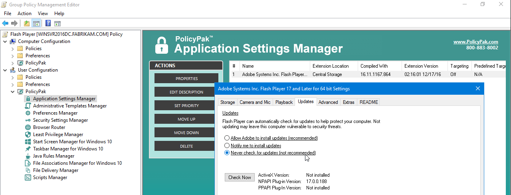
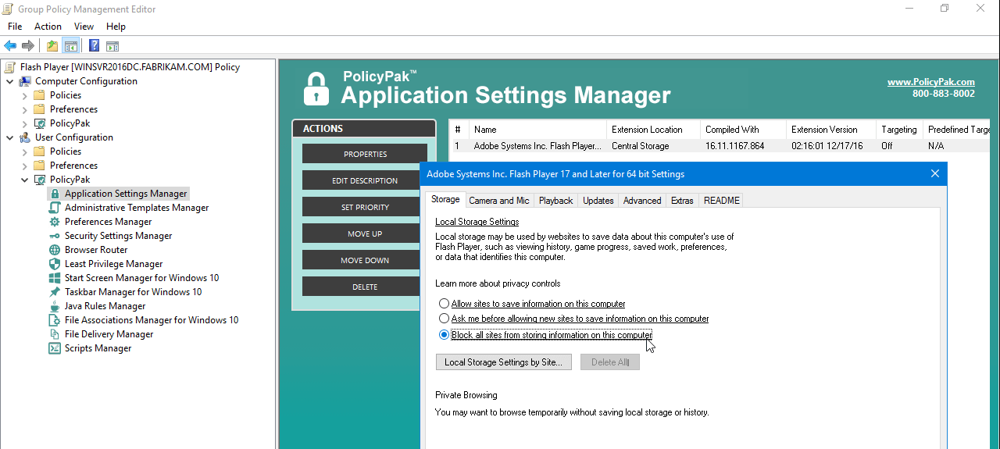
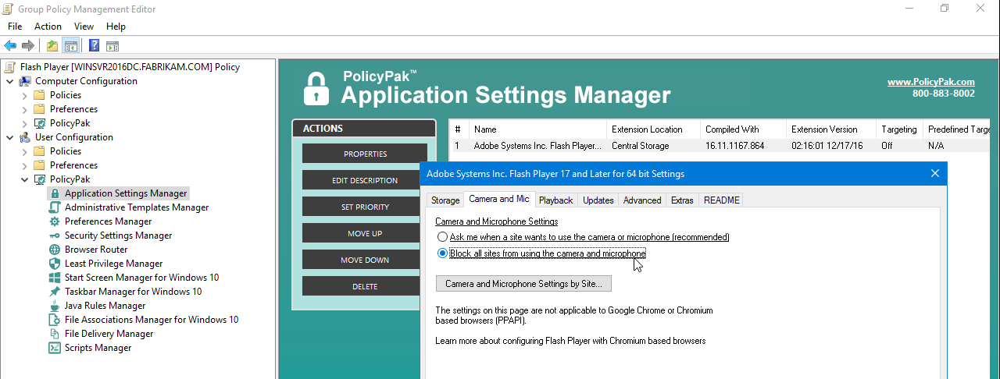

Endpoint Policy Manager for Adobe Flash Player
Got Super cookies? I bet you do – and, no, it's not your Aunt Edna's latest diet craze. It's your latest security threat. And it lives on your corporate Windows machines.
The problem is:
- The "bad guys" can use your Flash Player to store information what you're searching and what you're doing.
- Then the "really bad guys" can pick up that data and
- The "insanely bad guys" sell your data to
- The "downright criminals" trying to attack your corporate machines!
So, as "good guys" what are we supposed to do? Lock it down — THAT'S WHAT.
Enter Netwrix Endpoint Policy Manager (formerly PolicyPak), and it's free Pre-configured Endpoint Policy Manager for Flash player. Using Group Policy, it's super easy to manage how:
- Adobe Flash is should get updates (you KNOW you want to turn it off!)
- Users should (and shouldn't) use cameras and microphones. Prevent data leaks!
- Adobe Flash stores data / cookies / supercookies about where it's been and what you've been doing; ya know, that important "privacy" stuff.
- Specify exactly which sites can ALLOW or BLOCK Camera, Microphone, Local Storage, Peer-assisted Networking, and Developer settings.
… and just about every other Adobe Flash setting.
Adobe Flash has no native Group Policy support with ADM or ADMX files to control these key settings.
That's because these settings aren't stored in the Windows registry – they're stored in a file – that users don't have access to. Because of that, there's no way to manage that on all your client computers. That is, without Endpoint Policy Manager.
Watch this video to see exactly how to lock down Flash Player using Group Policy:
Our solution isn't a mere "ADM" template, it's a true Group Policy extension, with powerful management capabilities. PolicyPak can deliver and revoke Flash settings – even though the settings are in a system file on the PC.And you can manage it using Group Policy.
Our PolicyPak software snaps-in to the Group Policy Editor and mimics the user interface of Flash Player itself. We've even added a few things you can't normally do – unless you know the tricks !Here, you can see how to prevent Flash from being updated.

And you can prevent users from picking up dangerous Flash super cookies, by performing this simple step.

Or, you can prevent users from using cameras and microphones! A serious Privacy "no-no" ! Poof..there goes cameras and microphones for the user.

With PolicyPak and the free Pre-Configured PolicyPak for Flash Player, you get full control over Flash Player, and granular control for each OU or users – using normal Group Policy controls. What's more, the settings will revert back when the Group Policy no longer applies (for instance, if the user changes job roles.)
Don't you think these settings are important to set for your company for security?
Besides, once you're using PolicyPak to manage Flash Player, you'll also get to manage all your other enterprise desktop applications the same way:Java, WinZip, Acrobat, Firefox and any custom application you have. They're 100% included – absolutely free.
It's all included when you're a PolicyPak Professional customer.
PolicyPak was designed by former Group Policy MVP Jeremy Moskowitz – who "https://www.mdmandgpanswers.com/books" on Group Policy, runs https://www.mdmandgpanswers.com/, and lives and breathes Group Policy and enterprise software deployments and desktop lockdown.
When you're ready to get serious about managing Firefox today, and in the future, PolicyPak is ready for you.
Manage Flash Player using Group Policy video transcript
Hi, this is Jeremy Moskowitz, former Group Policy MVP and Founder of PolicyPak Software. In this video, we're going to learn how to lock down the Flash Player. Let's get right to it.
Let me show you a website that is very interesting. It's called "www.testmycam.com." When you run testmycam.com with Flash Player the way it's normally working, you can see me on this video right here. So the idea is this is the Flash Player turning on my camera automatically.
I don't know if that sounds like a good idea for your company or not, but I would probably guess you probably want to lock down Flash's access to cameras. You want to do it for all of your correct pockets of users.
Let's go ahead and see how we're going to do that. We'll go ahead and close this page. We'll come back to it a little later. Actually, before we close it down, let's right click over here and go to "Settings…" and see that there's a lot of stuff that users can manipulate and screw up. A lot of stuff for them there.
They can also right click over this and go to "Global Settings…" and you get prompted. Again, this is a regular user. They can just say "Allow" right here, and sure enough look at all these wonderful settings for users to click on. They can click on stuff like "Check Now," which opens up another browser page which is nice and confusing for them and things like that.
So if you're interested in locking down the Flash settings, let's go ahead and see how to do that. Let's go ahead and close out all this stuff. We're going to go over to our "Group Policy Management" console here. In previous videos, I've shown you how to just go to "C:Program FilesPolicyPakExtensions." This is where the PreConfigured Paks or the Paks you create are going to live if you choose so.
We'll go ahead and click on the "Flash" PreConfigured PolicyPak that we've got. We'll take the PolicyPak DLL and copy it in there, and you can see that's all it takes. You're just copying a file.
We'll go ahead and "Create a GPO" against our "East Sales Users," and we'll call this "Flash Lockdown 2." I must already have a Flash Lockdown.
We'll go ahead and click "Edit…" here. Then we'll dive down under "PolicyPak/Applications/New/Application," and here's "PolicyPak for Flash Player." We'll go ahead and click on that guy, and let's make some choices. Actually, we've added a couple of key features that you can't even do normally when you modify the Flash Player if you were to walk up to it and handle it that way. But let's start with some of the ones you can do.
Let's see, do you want users to be able to "Allow sites to save information on this computer," or do you want to "Block all sites from storing information on this computer"? Probably a good idea.
If we head over to what we were just talking about, "Cameras and Mic and Privacy," let's "Block all sites from using the camera and microphone."
Let's take a look and go over to the "Advanced." Here we go. Here's a key one. We want to make sure that, probably for most organizations, you want to "Never check for updates" so you can manually put it on using whatever technology you're using for software deployment.
While we're here, we've got that pesky "Check Now" button. Let's right click over that guy and "Disable corresponding control in target application." So we're setting those settings and disabling a particular button.
Let's go ahead and see if that all does what it's supposed to do. We'll go ahead. We could log off the machine. We could run GPUpdate. We could change job roles and be getting this for the very first time. If any of these things are true, you're going to get Group Policy and you're going to get PolicyPak.
As soon as this is done, let's go ahead and go back to that wonderful website. Run back to "www.testmycam.com," that wonderful website here. Well, good news for you; you don't have to see me right now. You can see that there's no camera automatic thing there. We can see that even though there are settings here, the user can't make any changes here actually. The changes that they make here are ignored.
The same thing here with "Global settings…" If they do click in here, those settings are ignored. It doesn't actually do anything, no matter what they set it to.
But we go the extra mile here. We said that for "Advanced," remember here, we said we wanted to get rid of the "Check Now" button. So even though it's definitely not checking, that "Check Now" button would launch that webpage. We've prevented that button from actually working.
That's it with regards to using Group Policy, PolicyPak and Flash Player settings. I hope you've enjoyed this video, and happy locking things down.
Take care.